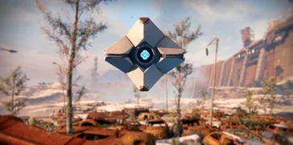
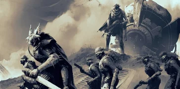

Voici l'intégralité de la campagne de Destiny.
Votre
Spectre

Les Spectres sont de petites machines créées par le Voyageur peu après la Chute. Leur but est de localiser et de ressusciter
les individus décédés capables de manier la Lumière en tant que Gardiens. Les Spectres offrent d'énormes avantages à leurs
Gardiens en combat, comme la possibilité de guérir une blessure en quelques minutes, ou bien de les réanimer.
vous réanime, et vous explique que vous êtes devenu un Gardien, et qu'il vous a fait don de
la puissance du Voyageur: la Lumière.
Mais avant que vous ne puissiez faire quoi que ce soit, des
Déchus

Dans un lointain passé, les Déchus étaient un peuple fier et noble, réparti en grandes maisons réputées pour leurs
techniques de combat. Ils ont manifestement perdu leur gloire d'antan, et sont aujourd'hui un peuple de pirates
arpentant les systèmes stellaires en quête de pillages.
Ennemis: les Déchus
vous prennent pour cible. Votre Spectre vous annonce que vous êtes en plein milieu de leur territoire, et qu'il vaudrait mieux
fuir.
Votre Spectre vous montre une brèche à travers un gigantesque mur, et vous dit que vous pourriez peut-être trouver
une sortie en passant à travers.
Une fois à l'intérieur, vous ne voyez rien. Votre Spectre allume les lumières, et vous constatez que cet endroit est envahi par
les Déchus. En continuant un peu dans le mur, vous trouvez un vieux fusil, et vous vous empressez de le récupérer pour éliminer
les Déchus se dressant devant vous.
Après quelques instants à lutter contre ces pirates de l'espace, vous sortez du mur, et entrez dans un
Cosmodrome. Votre Spectre vous informe que vous devriez sûrement trouver quelque chose pour vous échapper de
cet endroit.
Vous trouvez un hangar avec un vaisseau interstellaire, et votre Spectre vous raconte que cela fait longtemps qu'il est ici.
Votre Spectre peut le faire fonctionner, mais vous vous faites intercepter par une équipe de Déchus, ainsi qu'un Capitaine
du nom de Rahn.
Une fois cette éliminée, le vaisseau démarre, mais votre Spectre vous annonce que ce dernier ne pourra pas aller en orbite. Mais
il pourra vous emmener dans un endroit ou vous serez en sécurité: la Dernière Cité, dernier bastion de
l'humanité, et le dernier endroit que le Voyageur peut protéger.
Vous êtes de retour au Cosmodrome. Votre Spectre vous raconte que l'objectif d'un Gardien est de protéger la Dernière Cité et ses
habitants, et d'éliminer les menaces de la Dernière Cité n'importe ou dans le système solaire. Cependant, vous ne pourrez pas aller
bien loin avec votre vaisseau sans boîte de distorsion.
Votre Spectre vous annonce qu'il a détecté un vaisseau d'un Gardien qui s'est écrasé non loin. Si les Déchus ne se sont pas encore
emparés des pièces détachéees, vous pourrez peut-être y trouver ce que vous cherchez.
Voici les différentes destinations que vous avez découverte lors de votre aventure sur Destiny.
DE NOUVELLES DESTINATIONS ONT ÉTÉ DÉCOUVERTES. VOIR LES DESTINATIONS
Les rapports des éclaireurs de l'Avant-Garde ne signalent aucun nouveau combattant. Cependant, une forte activité Déchue a été détectée près du Cosmodrome.
AUCUN NOUVEL ENNEMI N'A ÉTÉ DÉCOUVERT.
Avec la découverte de la Contrée Infestée, de nouvelles menaces ont été identifiées, et l'Avant-Garde a mis à disposition des Gardiens un nouvel Assaut.
Un éclaireur de l'Avant-Garde a remarqué quelque chose d'anormal au fond de la Contrée Infestée.
Kovik, Prêtre Symbiotique, fait des expérimentations sur les membres de la Ruche grâce à
l'ARIA.
Les Gardiens doivent donc pénétrer un ancien silo à missiles et arrêter Kovik avant que ses expériences ne deviennent
une vraie menace pour le système.
L'Avant-Garde appelle tous les Gardiens disponibles à se rendre sur Vénus pour une mission de la plus haute importance. Préparez-vous, vous devrez affronter les unités Vex les plus puissantes.
La Chambre de Duplication de l'ARIA a été détruite. La production d'ARIA pour les Diables Symbiotiques a été arrêtée.
Mais il reste encore une chose.
Quelqu'un ou quelque chose continue de distribuer l'ARIA restant aux Symbiotes.
Les Gardiens doivent donc trouver la source de l'infection de l'ARIA et la détruire pour se débarasser des Symbiotes sur Terre.
Mais maintenant que la Chambre de duplication est détruite, les Symbiotes feront tout leur possible
pour vous empêcher d'atteindre leur dernière source d'ARIA.
Dans Destiny, un Raid est composé de plusieurs étapes. Chaque étape possède une mécanique de jeu bien précise
qui est nécessaire à sa complétion.
Si vous souhaitez découvrir les mécaniques de ce Raid, cliquez ici.